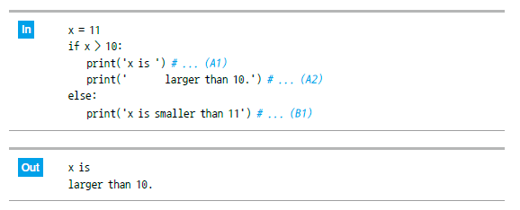
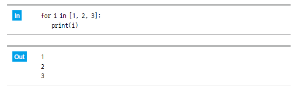

1. 이번 단원에서 배우는 것
NumPy는 숫자 데이터를 빠르고 편리하게 다루기 위한 파이썬 라이브러리입니다. 리스트보다 수치 계산에 적합하며, 표 형태의 데이터나 이미지 데이터처럼 여러 숫자가 모여 있는 데이터를 처리할 때 자주 사용합니다.
ndarrayNumPy의 핵심 배열 자료구조입니다.
벡터와 행렬1차원, 2차원 숫자 데이터를 표현합니다.
슬라이싱배열의 일부를 선택합니다.
조건 필터링조건을 만족하는 값만 골라냅니다.
2. NumPy 불러오기
NumPy는 보통 np라는 별칭으로 불러옵니다. 이후 np.array(), np.arange()처럼 np.을 붙여 사용합니다.
import numpy as np
주의:
numpy가 설치되어 있지 않으면 pip install numpy로 설치해야 합니다.3. ndarray 만들기
리스트를 np.array()에 넣으면 NumPy 배열인 ndarray가 만들어집니다. 데이터 분석에서는 숫자 배열을 기반으로 평균, 합계, 조건 필터링을 자주 수행합니다.

import numpy as np
scores = np.array([80, 90, 75, 100])
print(scores)
print(type(scores))
4. 벡터와 행렬
1차원 배열은 벡터처럼 생각할 수 있고, 2차원 배열은 행과 열을 가진 행렬처럼 생각할 수 있습니다.
| 구분 | 의미 | 예시 |
|---|---|---|
| 1차원 배열 | 한 줄로 나열된 숫자 데이터 | [1, 2, 3] |
| 2차원 배열 | 행과 열이 있는 숫자 데이터 | [[1, 2], [3, 4]] |
vector = np.array([1, 2, 3])
matrix = np.array([[1, 2, 3], [4, 5, 6]])
print(vector)
print(matrix)
5. 배열의 사칙연산
NumPy 배열은 리스트와 달리 배열 전체에 한 번에 연산을 적용할 수 있습니다. 이 특징 때문에 데이터 분석에서 계산 코드가 훨씬 간결해집니다.

scores = np.array([80, 90, 75])
print(scores + 5)
print(scores * 2)
print(scores / 10)
6. 슬라이싱
슬라이싱은 배열의 일부 범위를 선택하는 방법입니다. start:end 형식으로 작성하며, 끝 번호는 포함되지 않습니다.

numbers = np.array([10, 20, 30, 40, 50])
print(numbers[0])
print(numbers[1:4])
print(numbers[:3])
print(numbers[3:])
7. 조건 필터링
조건 필터링은 조건을 만족하는 값만 선택하는 방법입니다. 예를 들어 점수가 80점 이상인 데이터만 골라낼 수 있습니다.
scores = np.array([80, 90, 75, 100])
mask = scores >= 80
print(mask)
print(scores[mask])
데이터 분석 연결: pandas에서 특정 조건을 만족하는 행을 선택할 때도 이와 비슷한 방식의 조건 필터링을 사용합니다.
8. 실습 체크리스트
import numpy as np로 NumPy를 불러올 수 있다.np.array()로 배열을 만들 수 있다.- 1차원 배열과 2차원 배열의 차이를 설명할 수 있다.
- 배열 전체에 사칙연산을 적용할 수 있다.
- 슬라이싱으로 배열 일부를 선택할 수 있다.
- 조건 필터링으로 원하는 값만 선택할 수 있다.
9. 종합 실습 문제
1. 문제 출제
학생 5명의 점수를 NumPy 배열로 저장하고, 80점 이상인 점수만 골라 평균을 계산해 보세요.
- 점수는 NumPy 배열에 저장합니다.
- 전체 평균을 계산합니다.
- 80점 이상인 점수만 필터링합니다.
- 80점 이상인 학생들의 평균을 계산합니다.
- 전체 점수, 전체 평균, 80점 이상 점수, 80점 이상 평균을 출력합니다.
2. 문제 해결에 필요한 개념 요약
| 개념 | 활용 방법 |
|---|---|
| ndarray | 점수 데이터를 배열로 저장합니다. |
| 배열 연산 | 평균 계산에 사용합니다. |
| 조건 필터링 | 80점 이상인 점수만 선택합니다. |
| 계산 결과를 화면에 출력합니다. |
3. 수도코드
NumPy를 불러온다.
점수 5개를 배열에 저장한다.
전체 평균을 계산한다.
점수가 80 이상인지 조건을 만든다.
조건을 만족하는 점수만 선택한다.
선택된 점수의 평균을 계산한다.
결과를 출력한다.
4. 실행 예시
| 항목 | 예시 값 |
|---|---|
| 점수 | 70, 85, 90, 60, 95 |
예상 출력값은 다음과 같습니다.
전체 점수: [70 85 90 60 95]
전체 평균: 80.0
80점 이상 점수: [85 90 95]
80점 이상 평균: 90.0